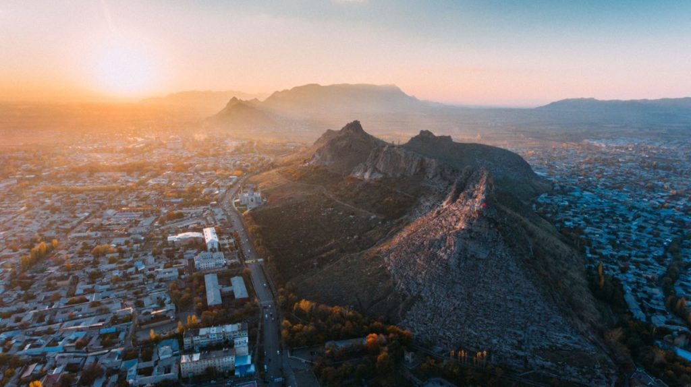
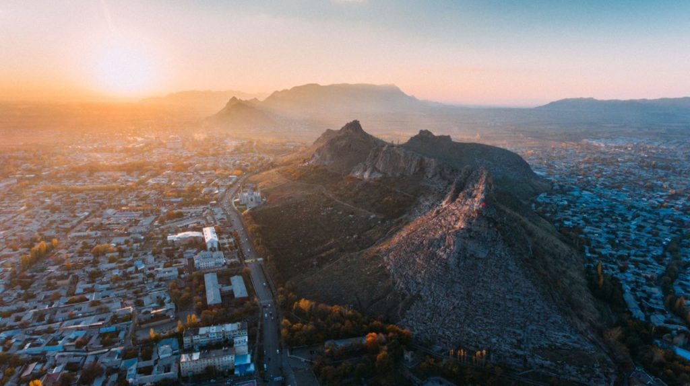

Кыргызстан — это настоящая жемчужина Центральной Азии и одна из самых красивых и самобытных стран мира.
Уже сейчас, несмотря на относительную малоизвестность, ежегодно нашу страну посещают тысячи туристов и каждый находит для себя здесь что-то особенное. Некоторых привлекает отдых на Иссык-Куле, на его приветливых и теплых берегах. Кого-то влечет удивительная кочевая культура и традиции, которые народ Кыргызстана сохраняет по сей день. Самых крепких телом и духом зовут высокие горы Тянь-Шаня и Памира, где проверяют себя на прочность и наслаждаются нетронутой и дикой природой любители пешеходного туризма, альпинисты, велотуристы и т. д.
В Кыргызстане сохранена практически первобытная красота природы: горы, реки, озера и долины мало заселены и практически необжиты человеком. Здесь вы можете почувствовать себя настоящим первопроходцем, раз за разом открывая для себя что-то новое.
Выбрав Кыргызстан как место для отдыха и путешествий, вы непременно получите большое количество новых и ярких ощущений. А определиться с выбором направления в ваших странствиях поможет туристический путеводитель по Кыргызстану Too.kg.
 



На страницах путеводителя мы постарались собрать наиболее полную и точную информацию по многочисленным природным и культурным красотам страны, которая поможет вам без труда составить маршрут для путешествия.
Полный список достопримечательностей Киргизии — от всем известных озера Иссык-Куль и ущелья Ала-Арча, до нетронутых человеком и по-настоящему диких гор Тянь-Шаня и Памира. На странице с интересующим вас местом можно найти всю необходимую информацию для посещения: точное местоположение с GPS-координатами, карту рельефа с возможностью приблизить и рассмотреть все горные дорожки и тропы, информацию о дорогах и туристической инфраструктуре, а также подробное географическое и историческое описание.
Достопримечательности удобно разделены по категориям. Во вкладке меню «Куда поехать?» можно найти все достопримечательности интересующей вас области Киргизии, или же найти интересующее вас место по географическому признаку, будь то озеро, горное ущелье или культурно-исторические место.
Чтобы вам было удобнее, все достопримечательности доступны во вкладке «Карта», где можно проложить маршруты через Google Maps.
Во вкладке «Чем заняться?» вы сможете найти именно те места, где можно занимать любимым для вас видом активного отдыха: от экстремальных альпинизма и рафтинга и до легких пеших походов и путешествий на автомобиле.
Также на сайте регулярно публикуются анонсы интересных для туриста ивентах и мероприятиях: этно-культурные фестивали, Всемирные Игры Кочевников и многое другое.